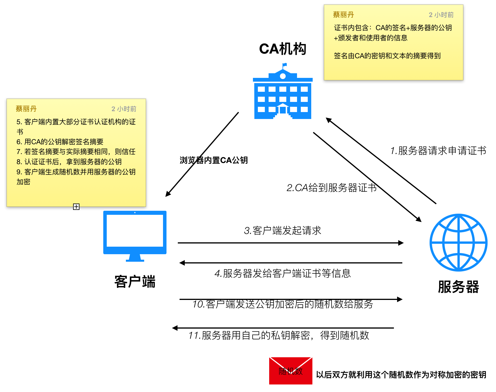
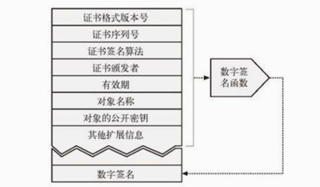
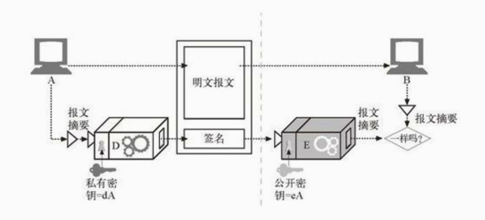
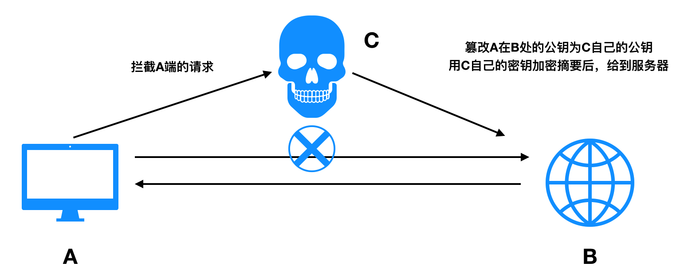
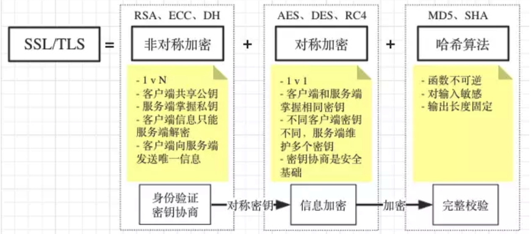

本篇文章主要是针对我对证书，对称加密，非对称加密，CA等内容的粗浅理解的记录。下图为我理解的大致流程。方便后续查阅。
几个基本概念
- 密码: 对文本进行编码，使偷窥者无法识别的算法。
- 密钥: 改变密码行为的数字化参数。
- 对称密钥加密系统: 编 / 解码使用相同密钥的算法。
- 不对称密钥加密系统: 编 / 解码使用不同密钥的算法。
- 公开密钥加密系统: 一种能够使数百万计算机便捷地发送机密报文的系统。
- 数字签名: 用来验证报文未被伪造或篡改的校验和。
- 数字证书: 由一个可信的组织验证和签发的识别信息。
一个整体的交互图

CA及CA证书
CA 就是认证机构,Certificate Authority。
CA 证书： 因特网的ID卡, 通常被称为 certs。
其中包含了由某个受信任的组织担保的用户或者公司的相关信息。
任何人都可以创建一个数字证书，但并不是所有人都能够获得受人尊敬的签发权，从而为证书信息担保，并用其私有密钥签发证书。
就像身份证是权威机构颁发的，能证明你的身份，一般大家都很信任。但是你的名片卡是你自己弄的，或者公司发的，大家可能就看看，但是不一定相信就是真的。
所以你信用贷时，用身份证大家认可，但是你用名片卡肯定不可以，即使你名片卡上写的职位是经理。

证书的组成
- “对象的名称（人、服务器、组织等）；
- 过期时间；
- 证书发布者（由谁为证书担保）；
- 来自证书发布者的数字签名；
- 对象的公开密钥。
服务器证书
- Web 站点的名称和主机名；
- Web 站点的公开密钥；
- 签名颁发机构的名称；
- 来自签名颁发机构的签名。
所以当浏览器收到证书后会进行检查，如果这个CA（认证机构）是个很权威的公共前面机构，浏览器就可以已经知道它的（CA的）公开密钥了。因为正版的浏览器会预先安装很多签名颁发机构的证书。注意浏览器这时候知道的公开密钥是CA认证机构的公开密钥，而不是服务器端的公开密钥，服务器端的公开密钥是通过CA的公开密钥解密得到的。
上面这里一定要理解清楚，再看下面的流程会清楚很多。
证书=公钥+申请者与颁发者信息+签名。
证书会颁发给服务器，浏览器请求时，服务器会给浏览器证书，浏览器通过签名和时间等，用CA的公钥判断证书是否有效。
数字签名
上面提到了证书里面会包含CA的签名。这个签名的意义和作用是什么呢？
“数字签名是附加在报文上的特殊加密校验码。”
用于描述是谁编写的报文，同时证明报文未被篡改过。这种技术被称为数字签名（digital signing）
比如上面CA证书的签名，目的是证明CA证书是合法的，是CA颁发的。并且证书没有被篡改。
签名就像人的签字一样。但是比人的签字更好的是可以通过程序判断是不是真的是你签的字。下面举例看看上面的CA的签名是怎么生成的。
- CA将变长报文提取为定长的摘要
- CA对摘要应用了一个签名函数，参数为CA的私钥
- 计算出签名后CA将其附加在报文的尾部，并且将报文和签名一起发送给服务器
- 然后客户端请求服务器时，拿到了证书。然后用CA的公钥进行签名函数的反函数
- 得到了明文摘要。拿到摘要后再与真实发过来的文本摘要做对比
- 若不一致，则签名不通过，若一致，则信任此证书及证书里面的服务器的
public key

怎么生成证书
- 服务器把
public key及一些其他附加信息给到CA - CA 用自己的
private key加密这些数据，加密完的数据称为数字证书。 - 然后服务器返回证书给浏览器时，返回的是用 CA 的
private key加密后的内容。浏览器收到后，会通过已知的 CA 的public key进行解密，来获得到 B 的public key。 - 这个得到的
public key是受信任的公钥key。
所以可以知道生成证书的这个过称其实也是非对称加密
注意生成证书和签名的整个过程，CA都是不需要客户端或者服务端的私钥的，私钥要确保只能自己使用。CA使用的私钥也仅仅是自己的私钥，用于签名。
认证流程
把上面那些概念理解清楚后，后面这个流程就很清晰了。
- 服务器申请向 CA 申请证书
- 浏览器首次向服务器发起请求， 服务器返回证书给浏览器
- 浏览器拿到证书，通过签名及时间等，判断是否有效，是否可信任
- 若证书有效
- 客户端生成随机数，然后用证书中的公钥进行加密，加密后发送给服务器，服务器用私钥进行解密，得到随机数。（这个过程是非对称加密）
- 之后服务器和浏览器就用这个随机数做为钥匙，对数据进行加密解密。
所以知道拿到证书后，使用随机数后的过称，应该是对称加密。
下面解释为什么会有证书和签名这些东西。证书和签名都是为了保证互联网传输信息安全。
对称加密与非对称加密
对称密钥加密技术的缺点之一就是发送者和接收者在互相对话之前，一定要有一个共享的保密密钥。
使用同一个密钥，带来的问题就是：
- 密钥从网络传输是不安全的。
- 若网络中有N个节点，那么每个节点都要跟其他节点建立联系，则会有N^2个节点。
为了解决上面两个问题，出现了非对称加密（“公开密钥加密技术”）。
节点A向节点B传送数据，节点A用节点B的公钥加密，B收到后用自己的私钥解密。
非对称加密可以理解成，一个节点有两个东西：一把锁，一个钥匙。锁可以给任何人，钥匙节点自己留用。所有的人都可以带着锁过来，但是只有自己能看别人发给自己的东西。
所以非对称加密虽然较安全也会带来问题：
- 数据被篡改，密钥被拦截。
- 耗时多，加密与解密速度慢。
假设A发送的数据被C拦截了，C用B的公钥和自己的数据加密后伪装成A发送给B了。
B也并不知道自己接受到的数据不是A的了，而是C的。
因此出现了数字签名和数字证书。
数字签名保证了B收到的信息内容没有被篡改(A用hash得到A的摘要，再用自己的私钥进行加密，得到签名，B收到后用A的公钥解密，得到摘要和收到的内容比对)
但是这并不能保证内容一定没有被C拦截。

因为坏坏的C可以把B保存的A的公钥替换成自己的公钥。然后冒用A给B发送信息。C拦截A的信息，然后自己发送信息给B，用B的公钥加密，然后B用自己的私钥解密。（如上图）
所以出现了证书。证书的目的就是保证了数据不被篡改，并且保证B处A的公钥就是A的公钥。
典型的对称加密算法： AES,DES,Trible DES
典型的非对称加密算法： RSA
https和TSL&SSL的关系
https是基于 TSL 及 SSL 实现的。TSL 和 SSL 主要依赖下面这几种算法
- 散列函数 Hash: 基于散列函数验证信息的完整性
- 对称加密: 对称加密算法采用协商的密钥对数据加密
- 非对称加密: 非对称加密实现身份认证和密钥协商
也就是说：TSL 其实对称加密和非对称加密都用到了。先用非对称加密获得对应的密钥。再用改密钥进行对称加密传输。这在我们上面的认证过程中有体现。
之所以后面获得密钥后，就用对称加密，主要是解决时间非对称加密太消耗时间和性能的问题。

标注：上面的图片来源于TLS 详解一文。更多的 SSL 握手等细节，我不关注。
总结
其实我本来是遇到了一个https的问题, 然后去了解了 tsl 和 ssl， 然后又去了解了非对称加密和对称加密。然后又去了解了证书和CA。
上文有部分概念性文案 - 摘录来自: [美]David Gourley Brian Totty Marjorie Sayer Sailu Reddy Aushu Aggarwal. “HTTP权威指南 (图灵程序设计丛书)”。 iBooks.